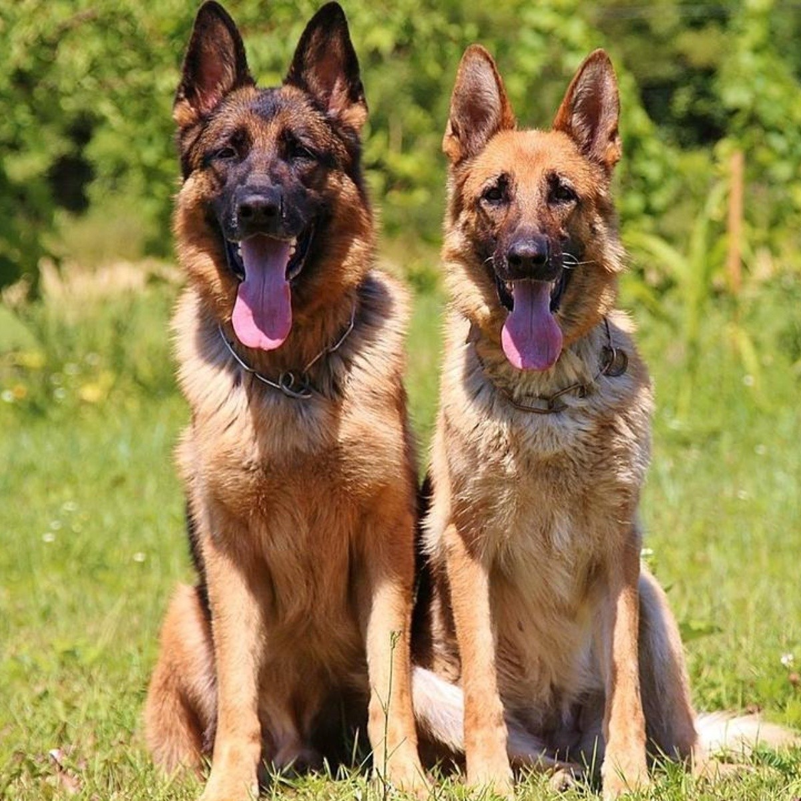
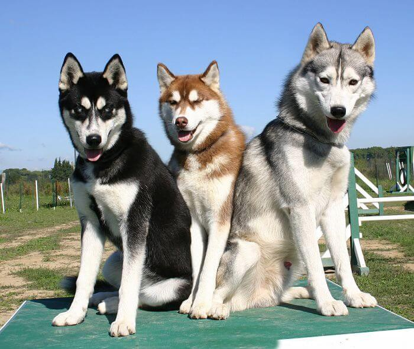
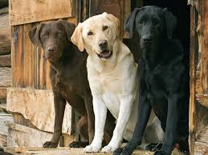

DoggyLand

El pastor alemán u ovejero es una raza canina que proviene de Alemania. Forman parte del grupo de pastoreo, ya que fueron perros desarrollados originalmente para reunir y vigilar ovejas.
$3000
Es una raza canina que hasta el siglo XV se consideró de uso exclusivo de los aristócratas y nobles. Hoy en día se les encuentra frecuentemente en las exposiciones caninas de belleza. Existen cuatro variedades: grande, mediano, enano y toy.
$9000
El husky siberiano es una raza de perro de trabajo originaria del noreste de Siberia.Este perro fue usado como perro de trabajo para tirar de los trineos a través de largas distancias durante sus partidas de caza, sirviendo, así como vehículo de transporte.
$4000
El labrador retriever es una raza canina originaria de Terranova, en la actual Canadá. Su excepcional afabilidad, gentileza, inteligencia, nobleza, energía y bondad, hacen que los labradores sean generalmente considerados como buenos compañeros, así como fiables perros trabajadores. Con adiestramiento, el labrador es una de las razas de perro más dócil, obediente y talentosa que existen.
$10,000
